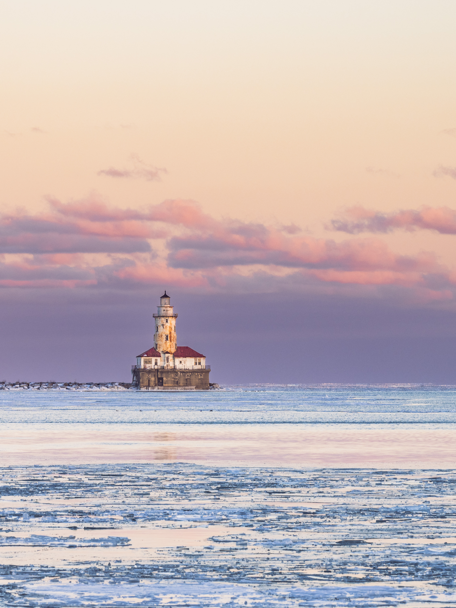

Chicago Harbor Lighthouse 是我很喜欢反复拍的一个点。它在 Navy Pier 附近，位置很好找，画面也很有芝加哥的辨识度：一边是密歇根湖，一边是城市天际线，中间是一座小小的灯塔，像是把湖面、风、黄昏和城市边界都收在了同一个画面里。
我最早被它吸引，是冬天的黄昏。那天很冷，风从湖面吹过来，拍摄的时候手都快冻麻了。但也正是这种天气，让画面有了平时看不到的质感。天空是粉紫色的，光线很柔，湖面上有碎冰和暗色的水纹。冷和暖同时存在，照片也因此多了一层季节感。

Chicago Harbor Lighthouse 是我很喜欢反复拍的一个点。它在 Navy Pier 附近，位置很好找，画面也很有芝加哥的辨识度：一边是密歇根湖，一边是城市天际线，中间是一座小小的灯塔，像是把湖面、风、黄昏和城市边界都收在了同一个画面里。
我最早被它吸引，是冬天的黄昏。那天很冷，风从湖面吹过来，拍摄的时候手都快冻麻了。但也正是这种天气，让画面有了平时看不到的质感。天空是粉紫色的，光线很柔，湖面上有碎冰和暗色的水纹。冷和暖同时存在，照片也因此多了一层季节感。



但这并不是一个只属于冬天的机位。后来我夏天也来拍过这里。夏天的 Navy Pier 更热闹，湖边人更多，游船、散步的人、骑车的人都会进入画面。相比冬天的冷冽和空旷，夏天的灯塔更像是城市生活的一部分：风更柔，水面更亮，画面也更容易带上轻松的节奏。
冬天拍这里，重点往往是天空、冰、水纹和灯塔之间的关系；夏天拍这里，则可以多留意人、船、湖面反光和远处天际线。两个季节的画面气质完全不一样，但都很好拍。对我来说，这也是这个地点最有意思的地方：同一个灯塔，会随着季节和天气变成完全不同的照片。


拍摄建议上，我会把这里当作一个日落点来看。冬天太阳落得早，可以提前一点到，先观察云层和湖面的变化；夏天则可以留到更晚，等到天空颜色变淡、城市灯光开始出现。焦段方面，中长焦会更容易把灯塔从湖面里压出来，也能让背景的城市线条更有存在感。
Navy Pier 本身很适合散步，但拍照时不一定要只盯着灯塔。回头看看城市方向，或者沿着湖边走一段，常常也会遇到很好的画面。冬天可以拍冷色、碎冰和风感；夏天可以拍湖面反光、游船和人的尺度。它不是一个复杂的地点，但很适合反复来。